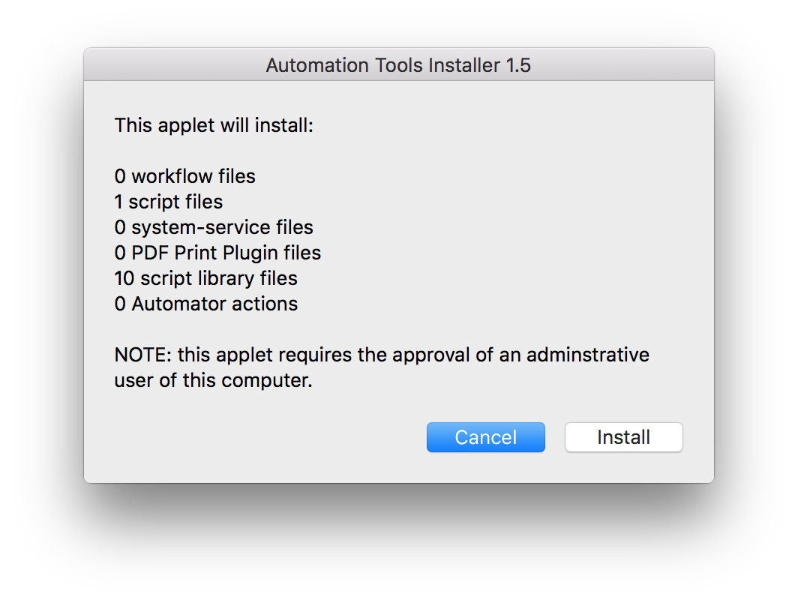
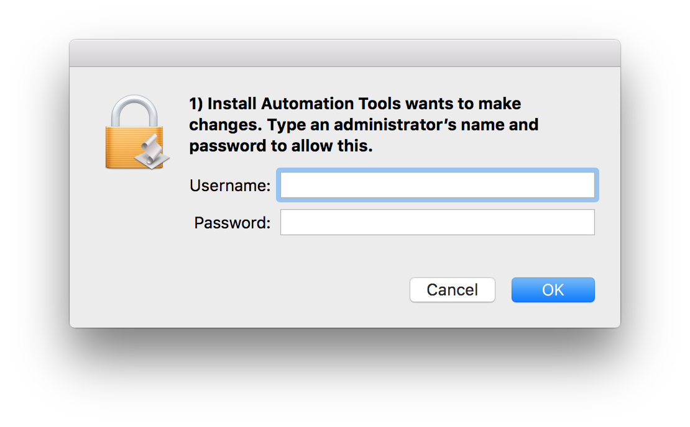
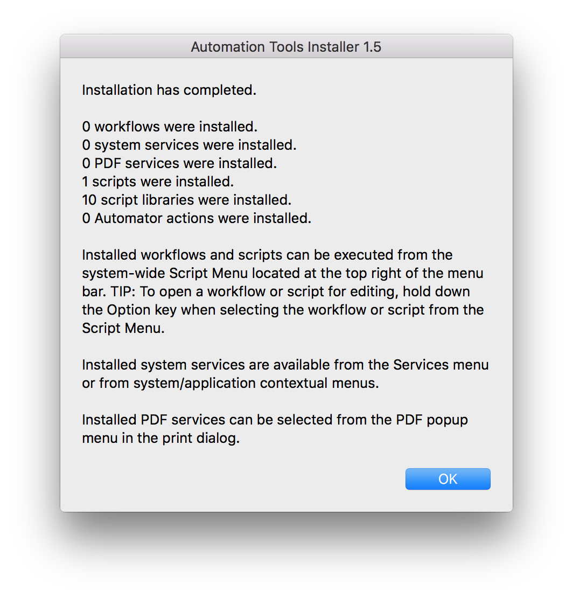

Automation Tools Installer
Here’s a short summary of what this installer applet does.
The custom Dictation Commands collection derive their abilities from the built-in automation architecture of OS X. Scriptable applications (such as the iWork suite) and supporting OS frameworks (like MapKit and EventKit) are controlled by specialized functions written in the native scripting languages of AppleScript and JavaScript.
All of those dictation command functions are organized and stored in special script files (“Script Libraries”) which are then used by the Speech Recognition services in the operating system when you speak a command.
The first installer script (cleverly titled: “1) Install Automation Tools”) places these script libraries in the Script Libraries folder in your user Library folder in your Home directory:
Home ▶ Library ▶ Script Libraries︎
In addition, the installer applet turns on the system-wide Script Menu and installs a helper script or two in this location:
Home ▶ Library ▶ Scripts
DO THIS ►Launch the applet 1) Install Automation Tools and in the forthcoming chooser dialog, select the folder “Installation Items” that is located in the same folder as this installer applet. Once you’ve chosen the folder, the installer’s opening dialog will appear (⬇ see below ) Click the “Install” button to begin the installation process:

DO THIS ►Enter your administrative user name and password in the dialog:

After the installation has completed, a confirmation dialog will appear with information about how any installed automation tools can be accessed. (⬇ see below )
DO THIS ►Click the OK button. The first step of the installation has completed.
